8 笼罩在神奇面纱之下的不定方程
不定方程是数论中一个古老而又有趣的分支。它有着丰富的内容。所谓不定方程是指解的范围为整数、正整数、有理数或代数整数的方程或方程组，其未知数的个数通常多于方程的个数。研究不定方程要解决三个问题：（1）判断何时有解；（2）有解时确定解的个数；（3）求出所有的解。不定方程的内容极其丰富，它的分类基本上是由方程的形式决定的。例如，可分为一次方程、二次方程、三次方程、高次方程、指数方程和一些特殊类型的方程，以及和许多学科交叉渗透产生的新的类型。
不定方程历史悠久，近年来这一领域与代数几何、代数数论、组合数学、计算机科学的联系又很密切，因此不定方程引起许多人的兴趣，有许多瞩目的优秀成果。不定方程与其他学科如组合数学、运筹学、几何学等也有着密切联系，故研究不定方程有极大的实用价值，而寻求不定方程的整数解，也就成为人们感兴趣的数学课题。日本数学家弥永昌吉（Shokichi Iyanaga，1906—2006）说：“这个理论的大部分仍然笼罩在神奇的面纱之下。”不少问题还有待解决。
每年世界各地的数学竞赛和国家公务员考试中都有不定方程问题。
困扰人们长达358年的不定方程
最著名的不定方程应该是费马大定理：“当整数n＞2时，关于x，y，z 的不定方程xn＋yn＝zn无正整数解。”
1601年，费马出生在法国南部图卢兹附近的博蒙-德洛马涅（Beaumont-de-Lomagne）一位皮革商人的家庭。童年时期在家里受的教育。长大以后，父亲送他到大学学法律，他毕业后当了一名律师。从1648年起，担任图卢兹市议会议员。费马是一位业余数学爱好者，把自己所有的业余时间都用于研究数学和物理，被誉为“业余数学家之王”。
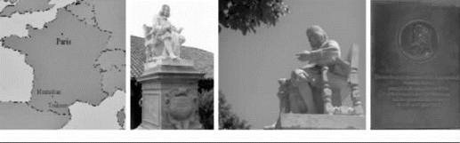
在博蒙-德洛马涅的费马纪念碑上有大定理的内容
1637年，费马在阅读丢番图《算术》拉丁文译本时，曾在第11卷第8命题旁写道：“将一个立方数分成两个立方数之和，或一个四次幂分成两个四次幂之和，或者一般地将一个高于二次的幂分成两个同次幂之和，这是不可能的。关于此，我确信已发现了一种美妙的证法，可惜这里空白的地方太小，写不下。”（拉丁文原文：“Cuius rei demonstrationem mirabilem sane detexi． Hanc marginis exiguitas non caperet．”）。毕竟费马没有写下证明，而他的其他猜想对数学贡献良多，由此激发了许多数学家对这一猜想的兴趣。
费马大定理看起来很简单，很容易理解，只要学过初中数学、知道勾股定理的人，都能明白费马大定理说的是什么，因此许多人都想证明。但直到1994年9月，英国数学家安德鲁·怀尔斯（Andrew Wiles）才彻底圆满证明了费马大定理。1995年论文发表，得到学界公认。2005年邵逸夫数学科学奖（Shaw Prize）100万美金授予怀尔斯；挪威科学与文学院将2016年度阿贝尔奖约600万挪威克朗（约465万元人民币）给他，以表彰他在证明费马大定理方面所做出的卓越贡献。
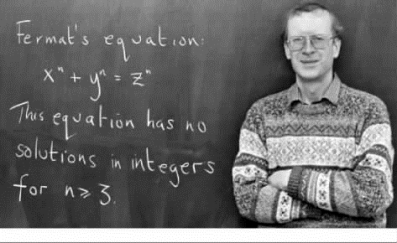
安德鲁·怀尔斯
古希腊数学家丢番图于3世纪初就研究过若干这类方程，所以不定方程又称丢番图方程，是数论的重要分支学科，也是历史上最活跃的数学领域之一。
丢番图（Diophantus）是公元3世纪古希腊人，被誉为代数学的鼻祖，流传下来关于他的生平事迹并不多。他有3本著作，其中最有名的是《算术》，其中包含了189个问题及其答案，而许多都是不定方程组（变量的个数大于方程的个数）或不定方程（两个变数以上）。丢番图只考虑正有理数解。
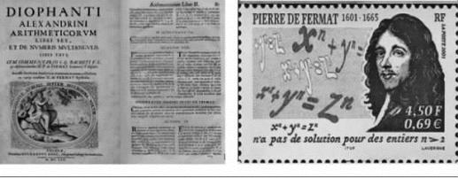
丢番图《算术》和费马的纪念邮票
中国是研究不定方程最早的国家
中国是研究不定方程最早的国家，公元初的《九章算术》提出了不定方程：“今有五家共井，甲二绠不足，如乙一绠；乙三绠不足，如丙一绠；丙四绠不足，如丁一绠；丁五绠不足，如戊一绠；戊六绠不足，如甲一绠。如各得所不足一绠，皆逮。问井深、绠长各几何？”（有五个家庭共同用一口井，他们用甲、乙、丙、丁、戊五根长短不一样的绳子汲水，甲绳两根连接起来还不够井深，短缺数刚好是乙绳的长；乙绳3根连接还不够井深，短缺数刚好是丙绳的长；丙绳4根连接还不够井深，短缺数刚好是丁绳的长；丁绳5根连接还不够井深，短缺数是戊绳的长；戊绳6根连接还不够井深，短缺数是甲绳的长。问井深、绳长各是多少？）
《九章算术》原书附有答案：井深七丈二尺一寸，甲乙丙丁戊绠长分别为二丈六尺五，一丈九尺一，一丈四尺八，一丈二尺九，七尺六寸。就是一个不定方程组问题，是中国数学史上首次明确提出不定方程问题。
井深：W；甲绳：A；乙绳：B；丙绳：C；丁绳：D；戊绳：E，则
W ＝2A ＋B，
W ＝3B ＋C，
W ＝4C＋D，
W ＝5D ＋E，
W ＝6E ＋A
此题6个未知数，只能列出5行方程，消元的结果，应能得到E ＝76 W/721。刘徽指出，《九章算术》的解法是“举率以言之”，实际上只给出了最小的一组正整数解。
解得
井深：W ＝721，
甲绳：A ＝265，
乙绳：B ＝191，
丙绳：C＝148，
丁绳：D ＝129，
戊绳：E ＝76
丢番图比《九章算术》的成书年代要迟三百多年。因此可以说，“五家共井”问题是世界上最早的不定方程。
公元5世纪的《张丘建算经》中的百鸡问题标志中国对不定方程理论有了系统研究。百鸡问题是说：“鸡翁一，值钱五，鸡母一，值钱三，鸡雏三，值钱一。百钱买百鸡，问鸡翁、母、雏各几何？”
设x，y，z 分别表鸡翁、母、雏的个数，则此问题即为求不定方程组的非负整数解x，y，z，这是一个三元不定方程组问题。
该问题是原书卷下第38题，也是全书的最后一题：原书给出解答如下：“答曰：鸡翁四，值钱二十；鸡母十八，值钱五十四；鸡雏七十八，值钱二十六。又答：鸡翁八，值钱四十；鸡母十一，值钱三十三；鸡雏八十一，值钱二十七。又答：鸡翁十二，值钱六十；鸡母四，值钱十二；鸡雏八十四，值钱二十八。”该问题导致三元不定方程组，《张丘建算经》给出了（x，y，z）＝（4，18，78），（8，11，81），（12，4，84）三组解，是其全部正整数解。其重要之处在于开创“一问多答”的先例，这是过去中国古算书中所没有的。
《张丘建算经》提示了解法：“术曰：鸡翁每增四，鸡母每减七，鸡雏每益三，即得。”这个提示太简括，其具体解法后人有若干猜测。
郭书春的《中国古代数学》认为数学史家钱宝琮对解法的理解是：以3乘第2行，减第1行，化成7x＋4y＝100，其中4y 与100都是4的倍数，因此x 应是4的倍数：x＝4t，那么y＝25－7t，令t＝1，2，3，则x＝4，8，12，y＝18，11，4，z＝78，81，84。因为必须求正整数解，故x 不能为0或负数，也不能大于12，只能有以上3组解。
后来人们一直未能找到百鸡问题的一般解法，直到19世纪中叶，宋元数学复兴之后，骆腾凤《艺游录》、时曰醇《百鸡术衍》用大衍求一术（公元13世纪的南宋大数学家秦九韶提出的方法，将不定方程和同余理论联系起来）求解，才找到一般解法。
百鸡问题对阿拉伯和欧洲数学产生了巨大影响。13世纪意大利斐波那契的《算盘书》、15世纪阿拉伯的阿尔·卡西的《算术之钥》中都有百鸡问题，显然源于中国。在西方，最早接触一次同余组的也是斐波那契，他在《算盘书》中给出了两个一次同余问题，但没有一般解法。
米兰市里的斐波那契纪念雕像
马克思解过的不定方程
犹太裔德国思想家马克思（Karl Marx，1818—1883）在研究无产阶级革命学说的同时，很重视数学科学的学习和研究。据马克思的女婿保尔·拉法格（Paul Lafargue）的《回忆马克思恩格斯》中说：“除了读诗歌和小说，马克思还有一种独特的精神休息方法，那就是演算他十分喜爱的数学。代数甚至是他精神上的安慰，在他那惊涛骇浪的生活中最痛苦的时刻，他总是借此自慰。在他夫人病危的那些日子里，他不能再继续照常从事科学工作，在这种沉痛的心情下，他只有把自己沉浸在数学里才勉强得到些微的安宁。在这个精神痛苦的期间，他写了一篇关于微积分的论文，据看过这篇论文的专家们说，这篇论文有很高的科学价值。在高等数学中，他找到最合逻辑的同时又是形式最简单的辩证运动。他还认为，一种科学只有在成功地运用数学时，才算达到了真正完善的地步。”
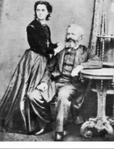
马克思和女儿珍妮
马克思1881年写了一本《数学手稿》。书中有这样一道题：“有30个人，其中有男人、女人和小孩，在一家小饭馆里花了50先令，每个男人花3先令，每个女人花2先令，每个小孩花1先令，问男人、女人和小孩各多少人？”
［解］设x，y，z 分别代表男人、女人和小孩的人数，则：
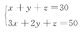
得
2x ＋y＝20
y＝2（10－x）
可以直接求出方程组的通解。
令t＝10－x，则
x ＝10－t，
y＝2t，
z＝30－x－y＝20－t
就是方程组的通解，其中t为整数。
由于0＜t＜10，
本题共有9组解，简化成（x，y，z）形式：
（9，2，19），（8，4，18），（7，6，17），（6，8，16），
（5，10，15），（4，12，14），（3，14，13），（2，16，12），
（1，18，11）。
有一道欧美的数学游戏问题：“现在共有100匹马和100块石头，马分3种：大型马、中型马和小型马。其中一匹大型马一次可以驮3块石头，中型马可以驮2块石头，而小型马2头可以驮一块石头。问需要多少匹大型马、中型马和小型马（问题的关键是刚好必须用完100匹马）？”其实本质就是百鸡问题。
民间流传的不定方程
方程和不定方程，民间也有涉及。
“板凳木马三十三，百个脚脚地上翻”（木马指的是木工用来加工粗树棒的三条腿支架），此问题涉及两个变量、两个方程，用二元一次方程组容易得到板凳1个、木马32个，显然不是不定方程问题。
徽州民间流传民歌：“獐十八，兔三斤，老鼠四两不为轻；九十九个头，合起来一百斤。”此问题涉及3个变量，我们只能得到两个方程，像这种变量个数多于方程个数且定义在整数集上的数学问题，也正是不定方程这种称呼的由来。
刘三姐是广西壮族民间故事里一个深受人民群众爱戴的传奇人物。1963年经典电影《刘三姐》中，三个秀才与刘三姐对歌的场面十分精彩，电影里的唱腔很美，歌中还涉及数学问题。
财主莫老爷请来的罗秀才唱：
“一个油桶斤十七，
连油带桶二斤一，
若还三姐猜得中，
将油送给三姐吃。”
刘三姐回答：
“你娘养你这样乖，
拿个空桶给我猜，
送你回家去装酒，
几时想喝几时筛。”
罗秀才翻着歌书摇头晃脑地唱道：
“三百条狗交给你，
一少三多四下分，
不要双数要单数，
看你怎样分得清。”
罗秀才满以为能难倒刘三姐。刘三姐唱道：
“九十九条打猎去，
九十九条看羊来，
九十九条守门口，……”
“剩下三条……”，罗秀才追问道：“剩下三条怎么办？”
“财主请来当奴才。”
罗秀才没想到不仅没有难倒刘三姐，反而自讨没趣。
下面我们从数学角度来分析这个问题。
将罗秀才出的数学问题翻译为数学语言：“把300条狗分成4群，每群都是单数，1群少，3群多，数量多的3群必须是一样多，否则就不是‘一少三多’，问你怎样分？”
［解］设少的1群狗有2n＋1条，多的3群狗每群有2m＋1条，且m＞n。
由题意可得：2n ＋1＋3（2m ＋1）＝300，可得3m ＋n ＝148。
由
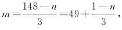
可知n＝3t＋1（t为非负整数），而m＝49－t。由148＝3m＋n＞4n⇒n＜37，则n＝3t＋1＜37⇒t＝0，1，2，3，…，11。
于是n 的取值可以是：1，4，7，10，13，16，19，22，25，28，31，34。
所以，一少三多的分配方法有以下12种情况：
（3，99，99，99），（9，97，97，97），（15，95，95，95），
（21，93，93，93），（27，91，91，91），（33，89，89，89），
（39，87，87，87），（45，85，85，85），（51，83，83，83），
（57，81，81，81），（63，79，79，79），（69，77，77，77）。
可见，刘三姐所答正是上述第一组解，这组解恰好一语双关地讥讽了“三个狗奴才”。
如何求二元一次不定方程的整数解
这里讨论的二元一次不定方程专指ax ＋by＝c（ab ≠0，a，b，c为整数）。
【定理1】二元一次不定方程ax＋by＝c有整数解，当且仅当整数a 和b的最大公约数（a，b）整除c。
证明 设（a，b）＝d。
充分性：因为d＝（a，b），所以存在整数x0，y0 使ax0 ＋by0＝d，又d｜c，所以c＝dk＝k（ax0＋by0）＝a（kx0）＋b（ky0），所以方程ax ＋by＝c有整数解（kx0，ky0）。
必要性：因为ax0＋by0＝c，x0，y0 为整数。
d 是a，b 的最大公约数，所以d｜a，d｜b，故d｜ax0＋by0，即d｜c。
如：方程2x ＋4y ＝5 没有整数解；2x ＋3y ＝5 有整数解。
【定理2】若整数a，b 互质，则方程ax ＋by ＝1有整数解，同时方程ax ＋by ＝c 也有整数解。若（x0，y0）是方程ax ＋by＝1的一个整数解，则cx0，cy0 是方程ax ＋by＝c 的一个整数解。
【定理3】整系数方程ax＋by＝（a，b）有整数解。
定理2和定理3都是“裴蜀定理”的内容。
【定理4】如果
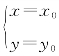
是满足整系数方程ax＋by＝c的一组整数解，则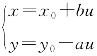
（其中u 为任意整数）也是满足上式的整数解。这表明，满足方程的整数解有无穷组，并且在ab＞0时，可选择x 为正（负）数，此时y 相应地为负（正）数。这个结论可以通过把这组解直接代入已知方程进行证明。
由这个定理，只要能够观察出二元一次方程的一组整数解，就可以得到它的全部整数解。
例如，方程4x＋5y＝21的一组解为
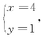
则此方程的所有整数解可表示为：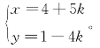
【定理5】n 元一次不定方程a1 x1＋a2 x2＋…＋an xn＝c（其中a1，a2，…，an，c为整数）有解的充要条件是最大公约数（a1，a2，…，an）｜c。
解n 元一次不定方程a1 x1＋a2 x2＋…＋an xn ＝c的方法：
可先顺次求出（a1，a2）＝d2，（d2，a3）＝d3，…，（dn－1，an）＝dn，若dn｜c，则方程无解；若dn｜c，则方程有解，作方程组：
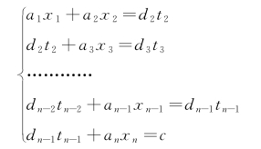
求出最后一个方程的一切解，然后把tn－1 的每一个值代入倒数第二个方程，求出它的一切解，这样下去即可得方程的一切解。不定方程通常有无穷多的解。
【例1】求3x＋21y＝118的整数解。
解：由于3与21的最大公约数（3，21）＝3，而118不能被3整除，故方程无整数解。
【例2】求24x ＋17y＝1的一组整数解。
解法1：
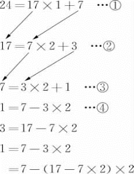
7＝24－17×1
结果 1＝5×（24－17×1）－17×2
＝5×24－7×17
24×5＋17×（－7）＝1
24x＋17y＝1特殊解
（x，y）＝（5，－7）
解法2：用同余解决。
24x＋17y＝1 ①
24x ≡1（mod17）
又24x ≡7x（mod17）
7x ≡1（mod17）
设7x＝17k＋1（k 是整数） ②
17k ≡－1（mod7）
∵17k ≡3k（mod7）
3k ≡－1（mod7）
3k＝7t－1（t是整数） ③
在③中令t＝1，k＝2
由②x＝5
由①y＝－7
24x＋17y＝1的特殊解是（x，y）＝（5，－7）。
【例3】求36x ＋83y＝1的整数解。
解：用辗转相除法求解。
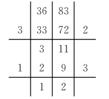
1＝3－2＝3－（11－3×3）
＝4×3－11
＝4×（36－3×11）－11
＝4×36－13×11
＝4×36－13×（83－2×36）
＝30×36－83×13
显然x ＝30，y＝－13是一组解（特解）。
因此，方程的通解为：x ＝30－83t，y＝－13＋36t。
【例4】装某种产品的盒子有大、小两种，大盒每盒能装11个，小盒每盒能装8个，要把89个产品装入盒内，要求每个盒子都恰好装满，需要大、小盒子各多少个？
解：奇偶法。设需要大、小盒子分别为x、y 个，则有11x ＋8y＝89，由此式89为奇数，8y 为偶数，所以11x 一定为奇数，所以x 一定为奇数，经计算得大、小盒子各3、7个。
【例5】有271位游客欲乘大、小两种客车旅游，已知大客车有37个座位，小客车有20个座位。为保证每位游客均有座位，且车上没有空座位，则需要大客车多少辆？
解：尾数法。大客车需要x 辆，小客车需要y 辆，可列出方程：37x＋20y＝271，20y 的尾数一定是0，则37x 的尾数等于271的尾数1，x 只能是3。
【例6】求方程组
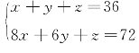
的正整数解。解：两式相减：7x ＋5y＝36
得：
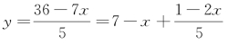
故1－2x 须为5 的倍数，而1－2x 为奇数，故1－2x ＝5（2k＋1）
得：x ＝－（5k＋2）
y＝7＋5k＋2＋2k＋1＝7k＋10
z＝36－x－y＝36＋5k＋2－7k－10＝－2k＋28
解须为正整数，则－（5k＋2）＞0，得：
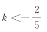
7k＋10＞0得：
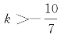
－2k＋28＞0，得：k ＜14
显然k＝－1，故方程组有1组正整数解（x，y，z）＝（3，3，30）。
挡板法
我们常常遇到（或可化为）下列问题：求方程x1 ＋x2 ＋…＋xm ＝n（m，n为正整数，m ≤n）的正整数解的个数。上述不定方程正整数解的个数问题可以转化为下列数学模型：把n个相同的小球排成一行，并将它分成m 段，每一段至少一个小球，有几种分法？
解：因为将一行球分成m 段，只要用m－1隔板将小球分隔，又n 个小球产生n－1空位（不计两端的两个空位）。取m－1块隔板，在这n－1个空位中任选m－1个位置放置这m－1块隔板，共有
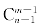
种放法。因此，方程x1＋x2＋…＋xm ＝n（m，n为正整数，m ≤n）的正整数解的个数为
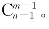
【推论1】方程x1＋x2＋…＋xm ＝n（m，n 为正整数，m ≤n）的非负整数解的个数为
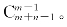
证：原方程等价于（x1＋1）＋（x2＋1）＋…＋（xm ＋1）＝n＋m，令yi＝xi＋1（i＝1，2，…，m），则y1＋y2＋…＋ym ＝n＋m，这里yi ≥1（i＝1，2，…，m），故方程x1＋x2＋…＋xm ＝n 的非负整数解的个数等于方程y1＋y2＋…＋ym ＝n＋m 的正整数解的个数，为
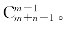
【例7】将n＋1个不同的小球放入n 个不同的盒子里，要求每个盒子不空，共有多少种不同方法？
解法1：因为每个盒子不空，所以应当有一个盒子里放入2个小球，而其他每个盒子里放入1个小球，对该事件作如下分步：（1）从n 个不同的盒子中选1个来放2个球，方法数为（2）从
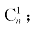
n＋1个不同的小球中选出2个小球来放入选出的盒子，方法数为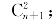
（3）将余下的不同小球放入剩下的不同盒子里（每个盒子放入1个小球），方法数为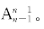
故完成该事件的方法数为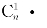
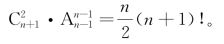
解法2：（1）将这n＋1个小球排成一排，方法数为
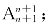
（2）在两两之间的n 个间隔之间插入n－1块隔板，方法数为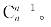
由于有两个小球处在两个隔板之间且不计较顺序，所以完成题目所给事件的方法数为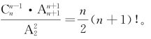
解法3：对该事件作如下分步。
（1）从n＋1个不同的小球中选出n 个小球放入n 个盒子里，每个盒子放1个，有不同放法
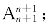
；（2）将剩下的一个小球放入n个盒子中的一个，有不同放法n 种，由于当“甲，乙两球放在同一个盒子里时”，“甲先放入（排列时放入的）、乙后放入”与“乙先放入（排列时放入的）、甲后放入”是同一种放法，所以完成题目所给事件的方法数为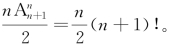
下面选取几例典型的试题参考。
【例8】（2010年全国联赛）求方程x＋y＋z＝2 010满足x ≤y ≤z 的正整数解（x，y，z）的个数。
解：首先易知x ＋y＋z＝2 010的正整数解个数为
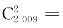
2 009×1 004，把x＋y＋z＝2 010满足x ≤y ≤z 的正整数解分为三类：（1）x，y，z 均相等的正整数解的个数显然为1；
（2）x，y，z 中有且仅有2个相等的正整数解的个数，易知为1 003；
（3）设x，y，z 两两均不相等的正整数解为k，由排列易知1＋3×1 003＋6k＝2 009×1 004，6k＝2 009×1 004－3×1 003－1解得k＝335 671。从而满足x ≤y≤z的正整数解的个数为1＋1 003＋335 671＝336 675。
如何研究方程x1＋x2＋x3＋…＋xk ＝n（且x1 ≥1，x2 ≥2，…，xk ≥k）的正整数解的问题？换元法：令yi ＝xi－（i－1），1≤i≤k，则转化为y1＋y2＋y3＋…＋yk ＝n－（1＋2＋
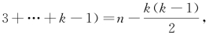
又转为求正整数解的个数问题。【例9】（2005年全国联赛）若自然数a 的各位数字之和为7，则称a 是“吉祥数”。将所有“吉祥数”从小到大排成一列：a1，a2，a3，…，若an ＝2 005，则a5n＝________。
解：∵方程x1＋x2＋x3＋…＋xk＝m 的非负整数解的个数为
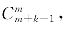
而使x1≥1，ｘi≥0（i≥2）的整数解个数为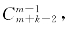
现取m＝7，可知k 位“吉祥数”的个数为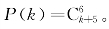
∵2005是形如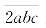
的数中最小的一个“吉祥数”，且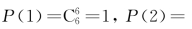
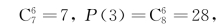
对于四位“吉祥数”1abc，其个数为满足a＋b＋c＝6的非负整数解的个数，即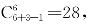
故2005是第1＋7＋28＋28＋1＝65个“吉祥数”，即a65 ＝2 005，5n＝325。又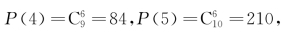
而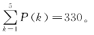
∴从大到小最后6 个五位“吉祥数”是：70 000，61 000，60 100，60 010，60 001，52 000，∴第325个“吉祥数”是52 000，即a5n ＝52 000。
两个重要的二元二次不定方程
从整体上来说，对于高于二次的多元不定方程，人们知道得不多。多元高次不定方程没有一般的解法，任何一种解法都只能解决一些特殊的不定方程，如利用二次域来讨论一些特殊的不定方程的整数解。在这里，我们考虑两种类型的方程：勾股数方程和佩尔方程。形如x2＋y2＝z2的方程叫做勾股数方程，这里x，y，z 为正整数。
对于方程x2＋y2＝z2，如果（x，y）＝d，则d｜z，从而只需讨论（x，y）＝1的情形，此时易知x，y，z 两两互素，这种两两互素的正整数组叫方程的本原解。
【定义】勾股数是数组（a，b，c）满足公式c2＝a2＋b2。能够构成直角三角形3条边的3个正整数。
以下是一些勾股数：
（3，4，5）（5，12，13）（7，24，25）（8，15，17） （9，40，41）
（11，60，61） （12，35，37） （13，84，85） （15，112，113）（16，63，65）
（17，144，145） （19，180，181） （20，21，29） （20，99，101）（21，220，221）
大约4 000年前，巴比伦人和中国人用勾三股四弦五｛3，4，5｝的概念构造一个直角三角形。现存印度公元前800年左右的Baudhayana Sulba的《算法》（Shuba Sutra）一书记录了最早的毕氏定理（即勾股定理）。毕达哥拉斯（约前569—约前475）用代数的方法来构建勾股数。古希腊哲学家柏拉图（Plato，前427—前347）提出表达式2n、n2－1和n2＋1用于产生勾股数。
勾股数通解公式是：
a＝2mn，b＝m2－n2，c＝m2＋n2。
世界上第一次给出勾股数通解公式的是《九章算术》。第九章“勾股”：利用勾股定理求解各种问题。其中绝大多数内容是与当时的社会生活密切相关的。比如：“今有二人同所立。甲行率七，乙行率三。乙东行，甲南行十步而邪东行与乙会。问甲、乙各行几何？”显然甲行c＋a，乙行b，而（c＋a）∶b＝m∶n＝7∶3。《九章算术》先求出南行率即勾率a＝（m2－n2）/2，东行率即股率b＝mn，邪行率即弦率c＝（m2＋n2）/2。
然后根据已知南行步数，其为通解的条件是m，n 为互素的奇数，《九章算术》的两个例题都符合条件。
国外被认为最先给出勾股数组通解公式的是希腊的丢番图，其公式是：
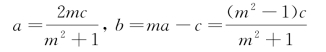
若令m＝u/v，c＝u2＋v2则可得到与《九章算术》等价的公式。丢番图大约与刘徽同时，比《九章算术》晚了三四百年。我国清代数学家、安徽歙县的罗士琳（1789—1853）提出的勾股数法则：取a，b为任意正整数，并且a＞b，则下式x＝a2－b2，y＝2ab，z＝a2＋b2中的x，y，z 必然是勾股数组。
【定理6】勾股数方程x2＋y2＝z2满足条件2｜y 的一切本原解可表示为：
x＝a2－b2，y＝2ab，z＝a2＋b2，其中a＞b＞0，（a，b）＝1且a，b 为一奇一偶。
【推论2】勾股数方程x2＋y2＝z2的全部正整数解（x，y 的顺序不加区别）可表示为：
x ＝（a2－b2）d，y＝2abd，z＝（a2＋b2）d，其中a＞b＞0是互质的且奇偶性不同的一对正整数，d 是一个正整数。
【推论3】如果k 是大于1的奇数，那么k，（k2－1）/2，（k2＋1）/2是一组勾股数。
【推论4】如果k 是大于2 的偶数，那么k，（k/2）2－1，（k/2）2＋1是一组勾股数。
勾股数不定方程x2＋y2＝z2的整数解问题主要依据定理来解决。
【定义】若一个丢番图方程具有以下的形式：
x2－dy2＝1，
其中d 为正整数且非平方数，则称此二元二次不定方程为佩尔方程（Pell's equation）。
佩尔方程比较复杂，将会在以后的《数学和数学家的故事》中谈及。
例题精解
对于非二元一次不定方程问题，常用求解方法有：
（1）代数恒等变形：通过因式分解、配方、换元等方法将方程变形，使之易于求解；
（2）不等式估算法：利用不等式等方法，先缩小方程中某些未知数的取值范围进行估算，然后再求解；
（3）同余法：对等式两边取特殊的模（如奇偶分析），缩小变量的范围或性质，得出不定方程的整数解或判定其无解；
（4）构造法：先利用恒等式构造一些特解，或构造一个求解的递推式，证明方程有无穷多解；
（5）无穷递降法递推。
对于一些比较特殊的不定方程，必须根据它的具体情况，通过分析求出它们的整数解。希望通过对以上内容的学习，灵活运用方法技巧。下面是一些二次不定方程的例子。
【例10】求x2－y2＝868的正整数解。
解：（x ＋y）（x－y）＝868，
又因x＋y 与x－y 同奇、同偶，这里x＋y 与x－y 均为偶数。
设x ＋y＝2u、x－y＝2v，代入原方程，得
4uv＝868
uv＝217＝7×31＝1×217，
∴u＝31，v＝7，或u＝217，v＝1，
代入，得
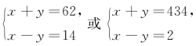
解之得原方程的正整数解为
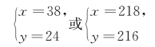
【例11】（原民主德国1982年中学生竞赛题）已知两个正整数b和c及素数a 满足方程
a2＋b2＝c2，
证明：这时有a＜b及b＋1＝c。
证：因式分解法
∵a2＋b2＝c2，
∴a2＝（c－b）（c＋b），
又∵a 为素数，∴c－b＝1，且c＋b＝a2易知b ＞1，
于是得c＝b＋1及a2＝b＋c＝2b＋1＜3b，
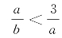
，而a ≥3，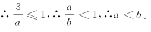
【例12】求2x y－5＝4y－x 的正整数解。
解：2x y＋x－4y＝5
x（2y＋1）－2（2y＋1）＝3，
（2y＋1）（x－2）＝3
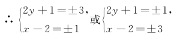
原方程的正整数解为
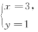
【例13】求不定方程2（x ＋y）＝xy＋7的整数解。
解：由（y－2）x ＝2y－7，易知y≠2，得
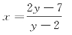
分离整数部得
由x 为整数知y－2是3的因数，
∴y－2＝±1，±3，∴y＝3，5，±1
∴方程整数解为
【例14】（1998年上海初中数学竞赛二试）求方程m2－2mn＋14n2＝217的所有正整数解。
解：视m 为主元，得
所以 217－13n2≥0
解得 n＝3或4。
当n＝3时，解得m＝13；
当n＝4时，解得m＝1或7，
所以方程的正整数解为
（m，n）＝（13，3），（1，4），（7，4）。
【例15】求2x2＋y2－2xy－4x－30＝0的正整数解。
解：把原方程看成y 的二次方程
∵（x－2）2≤34，
∴x－2只能取－1，0，1，2，3，4，5。
分别代入，求得正整数解为
【例16】在直角坐标平面上，以（199，0）为圆心，以199为半径的圆周上的整点个数为多少个？
解：设A（x，y）为圆O 上任一整点，则其方程为：（x －199）2＋y2＝1992；
显然（x，y）＝（0，0），（199，199），（199，－199），（398，0）为方程的4组解。
但当y≠0，±199时，（y，199）＝1（因为199是质数），此时，199，y，｜199－x｜是一组勾股数，故199可表示为两个正整数的平方和，即199＝m2＋n2。
因为199＝4×49＋3，可设m ＝2k，n＝2l＋1，
则199＝4k2＋4l2＋4l＋1＝4（k2＋l2＋l）＋1
这与199为4d＋3型的质数矛盾！
因而圆O 上只有4 个整点（0，0），（199，199），（199，－199），（398，0）。
【例17】求不定方程（x ＋2）（y－3）＝6的整数解。
解：容易看到有这几种情况：
（1）x ＋2＝1，y－3＝6
（2）x ＋2＝6，y－3＝1
（3）x ＋2＝3，y－3＝2
（4）x ＋2＝2，y－3＝3
（5）x＋2＝－1，y－3＝－6
（6）x＋2＝－6，y－3＝－1
（7）x＋2＝－3，y－3＝－2
（8）x＋2＝－2，y－3＝－3
故有（x，y）＝（－1，9），（4，4），（1，5），（0，6），（－3，－3），（－8，2），（－5，1），（－4，0）。
【例18】已知x，y 都是整数，且满足xy＋2＝2（x ＋y），求x2＋y2的最大值。
解：x y＋2＝2（x＋y），得（x－2）（y－2）＝2。
因为x－2，y－2都是整数，所以有这几种情况：
所以
x2＋y2最大值是25。
【例19】有多少正整数x 使得x 和x＋99同时是平方数？
解：若令x＝r2，x＋99＝m2，m、r≥0，因为m2－r2＝（m＋r）（m－r）＝99，
所以m ＋r≥m－r＞0
（1）m ＋r＝99，m－r＝1，
（2）m ＋r＝33，m－r＝3，
（3）m ＋r＝11，m－r＝9，
得（1）m ＝50，r＝49，
（2）m ＝18，r＝15，
（3）m ＝10，r＝1，
所以x 是1，225，2 401。
【例20】求所有满足8x＋15y＝17z的正整数三元组（x，y，z）。
解：两边取mod 8，得（－1）y≡1（mod 8），所以y 是偶数，再mod 7得2≡3z（mod 7），所以z 也是偶数。此时令y＝2m，z＝2t（m、t为正整数）。
于是，由8x＋15y＝17z可知：23x＝（17t－15m）（17t＋15m）；
由唯一分解定理：17t－15m＝2s，17t＋15m＝23x－s，
从而
注意到17是奇数，所以要使上式成立，一定有s＝1。
于是17t－15m＝2。
当m ≥2时，在17t－15m＝2的两边取mod 9，得（－1）t≡2（mod 9），这显然是不成立的，所以m ＝1，从而t＝1，x ＝2。
故方程8x＋15y＝17z只有唯一的一组解（2，2，2）。
【例21】求证a2＋b2＝3（s2＋t2）无正整数解。
证：假设下列方程有正整数解。
a2＋b2＝3（s2＋t2）
设a1＋b1＋t1＋s1 为最小的解，
显然，a1，b1都必须能被3整除。
设a1＝3a2 及b1＝3b2，我们得到
两边同时除以3，就得到
这是更小的解，与a1＋b1＋t1＋s1 的最小性相矛盾。所以，原方程无正整数解。
【例22】求方程y2＋3x2y2＝30x2＋517的所有正整数解。
解：原方程可变形为y2＋3x2y2－30x2－10＝507，即：（y2－10）（3x2＋1）＝3×13×13。
由于3不能整除（3x2＋1），所以3｜（y2－10）。
又因为3x2＋1＞1，所以y2－10＞0，经试验可知y2－10＝39，3x2＋1＝13。
所以x＝2，y＝7。
【例23】求证方程x3＋113＝y3没有正整数解。
解：假设方程有正整数解，则由x3＋113＝y3得（y－x）（y2＋x y＋x2）＝113。
由于y ＞x，y ＞11，所以y2＋x y＋x2＞112，于是y－x＝1，y2＋x y＋x2＝113。
所以（x＋1）2＋x（x＋1）＋x2＝3x2＋3x＋1＝113＝1 331，即3（x2＋x）＝1 330。
这与3不能整除1 330矛盾，所以原方程没有正整数解。
【例24】求方程x2＋x ＝y4＋y3＋y2＋y 的整数解。
解：原方程可变形为4x2＋4x＋1＝4y4＋4y3＋4y2＋4y＋1。
∴（2x ＋1）2＝（2y2＋y）2＋3y2＋4y＋1
＝（2y2＋y）2＋（y＋1）（3y＋1）
＝（2y2＋y）2＋2（2y2＋y）＋1＋（－y2＋2y）
＝（2y2＋y＋1）2＋（－y2＋2y）
（1）当3y2＋4y＋1＞0，－y2＋2y＜0，即当y＜－1或y＞2时，
（2y2＋y）2＜（2x ＋1）2＜（2y2＋y＋1）2
而2y2＋y 与2y2＋y＋1为两相邻整数，所以此时原方程没有整数解。
（2）当y＝－1时，x2＋x ＝0，所以x ＝0或－1。
（3）当y＝0时，x2＋x ＝0，所以x ＝0或－1。
（4）当y＝1时，x2＋x ＝4，此时x 无整数解。
（5）当y＝2时，x2＋x ＝30，所以x＝－6或5。
综上所述：（x，y）＝（－6，2），（5，2），（0，0），（－1，0），（0，－1），（－1，－1）。
【例25】证明方程2x2－5y2＝7无整数解。
证：∵2x2＝5y2＋7，显然y 为奇数。
（1）若x 为偶数，则2x2≡0（mod 8），
y2＝（2n＋1）2＝4n（n＋1）＋1，
∴y2≡1（mod 8），
5y2＋7≡4（mod 8）。
∵方程两边对同一整数8的余数不等，
∴x 不能为偶数。
（2）若x 为奇数，则2x2≡2（mod 4）。
但5y2＋7≡0（mod 4），
∴x 不能为奇数。故原方程无整数解。
【例26】求方程x2－4xy＋5y2＝169的整数解。
解：（配方法）原方程配方得（x－2y）2＋y2＝132。
在勾股数中，最大的一个为13的只有一组即5，12，13，因此有8对整数的平方和等于132，即（5，12），（12，5），（－5，－12），（－12，－5），（－5，12），（12，－5），（5，－12），（－12，5）。故原方程组的解只能是下面的8个：
【例27】求方程x ＋y＝x2－x y＋y2的整数解。
解：方程x2－（y＋1）x＋y2－y＝0有整数解，必须Δ＝（y＋1）2－4（y2－y）≥0，解得
满足这个不等式的整数只有y＝0，1，2。
当y＝0时，由原方程可得x＝0或1；当y＝1时，由原方程可得x＝2或0；当y＝2时，由原方程可得x＝1或2。
所以方程有整数解
【例28】方程是否存在整数解？
解：这同样是一个用同余解决不定方程的经典题目。
注意到左式≡0，1，…，14（mod16），
而2 015≡15（mod16），矛盾。从而方程无解。
一些优秀的不定方程的著作
不定方程的类型繁多，研究范围非常广阔，这里列出一些优秀的不定方程的书，可供有志于了解不定方程的中学老师和广大数学爱好者阅读。
关于不定方程的一部分优秀著作
动脑筋 想想看
1．将118写成两个整数的和，使一个整数为11的倍数，另一个整数为17的倍数。
2．超市将99个苹果装进两种包装盒，大包装盒每个装12个苹果，小包装盒每个装5个苹果，共用了十多个盒子刚好装完。问两个包装盒相差多少个？
3．求不定方程5x－14y＝11的最小正整数解。
4．（1）解不定方程7x ＋11y＝1 288，并求正整数解的组数。
（2）求3x ＋2y＋9z＝25正整数解的组数。
5．大小两种盒，大盒可装48粒巧克力，小盒可装30粒巧克力，现有306粒巧克力，问要大、小盒各几个才能将巧克力全部装入盒内，且每盒都装满？
6．某校初一年级50名男生（含两名带队教师）组团旅游，准备租住旅馆，有三人房、双人房、单人房三种房间。三人房每人每晚20元，双人房每人每晚30元，单人房每人每晚50元，租了20间房刚好全部住满，求各种房间各租了多少间？如何居住使费用最少？
7．獐十八斤，兔三斤，三只斑鸠共一斤。要一百只，一百斤。问獐、兔、斑鸠各多少只？
8．求三元一次方程组的正整数解：
9．（2009年国家公务员考试行测科目）甲买了3支签字笔、7支圆珠笔和1支铅笔，共花了32元，乙买了4支同样的签字笔、10支圆珠笔和1支铅笔，共花了43元。如果同样的签字笔、圆珠笔、铅笔各买一支，共用多少钱？
10．（2012年国家公务员考试行测科目）某儿童艺术培训中心有5名钢琴教师和6名拉丁舞教师，培训中心将所有的钢琴学员和拉丁舞学员共76人分别平均地分给各个老师带领，刚好能够分完，且每位老师所带的学生数量都是质数。后来由于学生人数减少，培训中心只保留了4名钢琴教师和3名拉丁舞教师，但每名教师所带的学生数量不变，那么目前培训中心还剩下学员多少人？
11．（2014年国家公务员考试行测科目）小王、小李、小张和小周4人共为某希望小学捐赠了25个书包，按照数量多少的顺序分别是小王、小李、小张、小周。已知小王捐赠的书包数量是小李和小张捐赠书包的数量之和，小李捐赠的书包数量是小张和小周捐赠的书包数量之和。问小王捐赠了多少个书包？
12．某校举行数学竞赛，优胜者分一、二、三等奖三种，奖品为数学课外读物。如果一等奖每人奖5本，二等奖每人奖3本，三等奖每人奖2本，就共奖了34本。如果一等奖每人奖6本，二等奖每人奖4本，三等奖每人奖1本，就共奖了28本，求获得各奖的人数。
13．某公司的6名员工一起去用餐，他们各自购买了3种不同食品中的一种，且每人只购买了一份。已知盖浇饭15元一份，水饺7元一份，面条9元一份，他们一共花费了60元。问他们中最多有几人买了水饺？
14．求三元一次方程43x＋7y＋17z＝400的正整数解。
15．求不定方程2x＋2y＝xy 的正整数解。
16．求方程x2＋y2＝2x＋2y＋xy 的所有正整数解。
17．求正整数解：
（1）x4＋y4＝z2；
（2）x2＝5y2＋6；
（3）14x2＋15y2＝71990；
（4）x3＝2＋3y2；
（5）（x－y）3＋（y－z）3＋（z－x）3＝30；
（6）x5＋3x4y－5x3y2－15x2y3＋4xy4＋12y5＝33；
（7）x2＋1＝3y；
（8）x2－2y2＋8z＝3；
（9）x3＋x ＋10y＝2 004；
（10）x（x ＋1）＝4y（y＋1）；
（11）x2＋1＝py，在这里p ≡3（mod4）是素数；
（12）x2－y3＝7，x，y ＞0。
18．求方程x2－y2＝105的正整数解。
19．证明方程x2＋y2－8z＝6无整数解。
20．一个布袋中装有红、黄、蓝3种颜色的大小相同的小球，红球上标有数字1，黄球上标有数字2，蓝球上标有数字3。小明从布袋中摸出10个球，它们上面所标数字之和等于21，则小明摸出的球中红球个数最多为几个？
21．（1994年中国国家集训队考试题）求出所有由正整数a，b，c，d 组成的数组，使得数组中任意3个数字之积除以剩下的一个数余数都是1。
22．（IMO-39试题）试确定使ab2＋b＋7整除a2b＋a＋b的全部正整数对（a，b）。
23．证明xn＋yn＝zn±1都有无穷多组正整数解（x，y，z）。
24．观察以下等式：
32＋42＝52
102＋112＋122＝132＋142
212＋222＋232＋242＝252＋262＋272
362＋372＋382＋392＋402＝412＋422＋432＋442
你能猜出下一个公式吗？
25．已知在△ABC 中，三边长分别是a、b、c，a＝n2－1，b＝2n，c＝n2＋1（n ＞1），求证：∠C 是直角。
26．观察以下表格：
你能找到这种模式的秘密吗？
27．（1978年莫斯科大学入学考试给犹太学生的考题）求xy＝yx的正整数解。